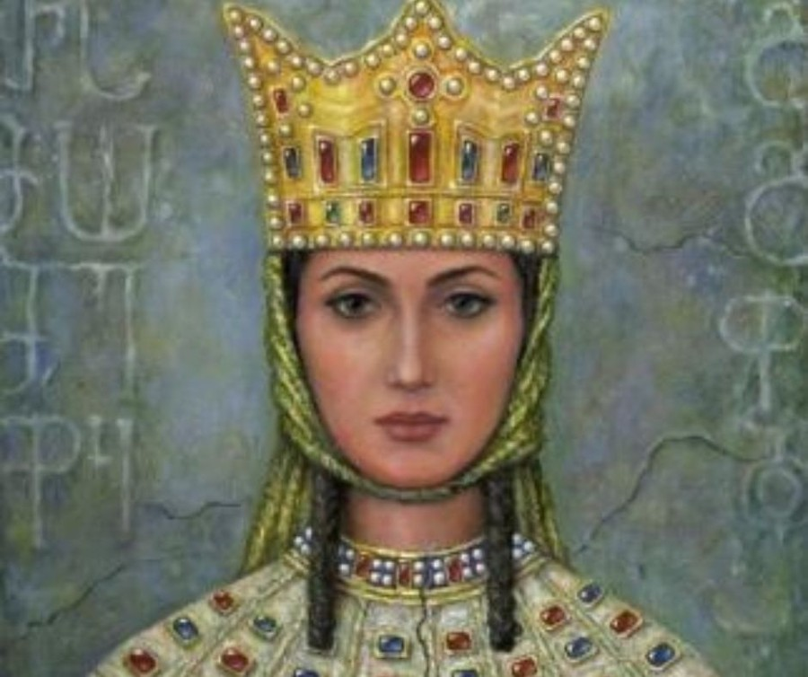

თამარ მეფე

თამარი, თამარ მეფე (დ. დაახ. 1160 — გ. 1213, შესაძლოა 1210 ან 1207) — საქართველოს მონარქი 1184 წლიდან, გიორგი III-ის ასული, ბაგრატიონთა სამეფო დინასტიის წარმომადგენელი. თამარს საქართველოს ოქროს ხანაში მოუწია მეფობა და უაღრესად წარმატებული მმართველი აღმოჩნდა. თამარი ატარებდა ტიტულს: „მეფეთ მეფე და დედოფალთ დედოფალი აფხაზთა, ქართველთა, რანთა, კახთა და სომეხთა, შირვანთა და შაჰანშათა და ყოვლისა აღმოსავლეთისა და დასავლეთისა თვითმფლობელობითა მპყრობელი“.